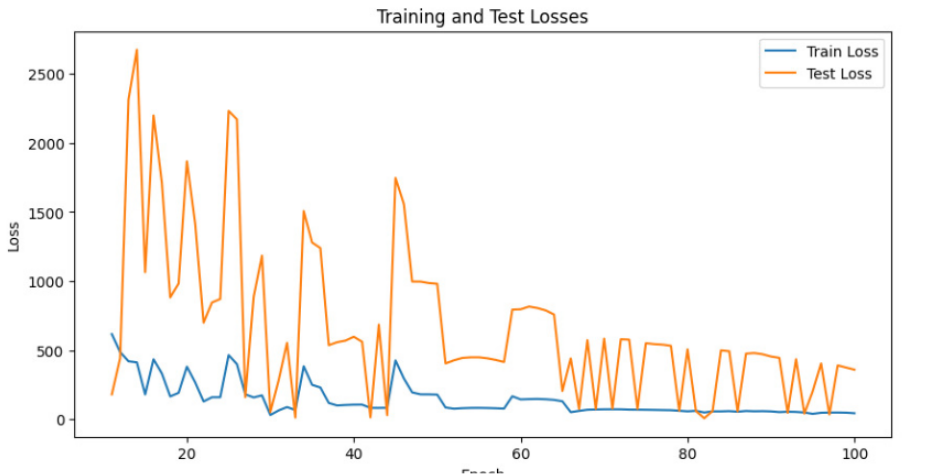
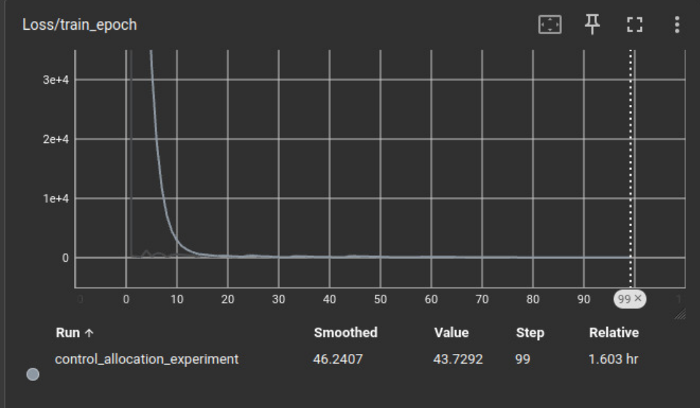
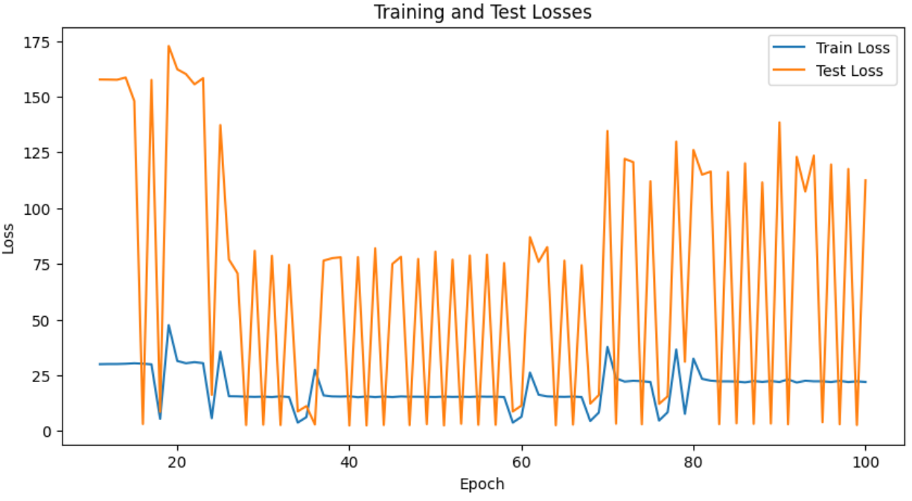
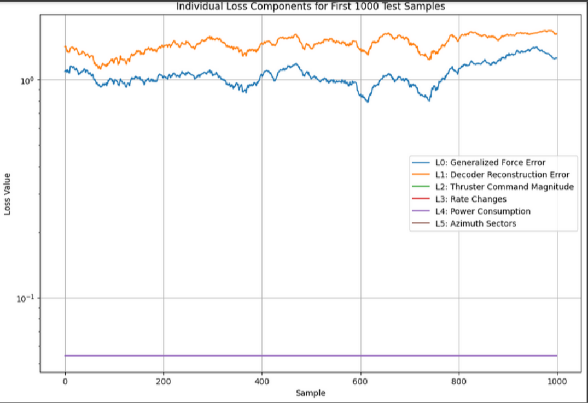
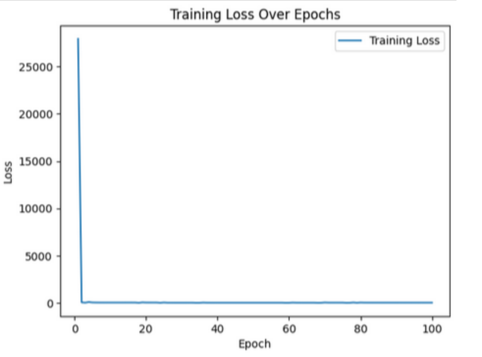

Generate actuator commands
Random-walk sequences are created for F₁, F₂, F₃, α₂, and α₃ to simulate realistic continuous command changes.
RBE 577 · Machine Learning for Robotics
This project studies how a neural network can learn to allocate desired ship forces and moments into feasible thruster commands while respecting actuator limits, rate constraints, forbidden azimuth sectors, and power-related penalties.
τ = [surge, sway, yaw]
Desired generalized forcesu = [F₁, F₂, α₂, F₃, α₃]
Thruster forces and azimuth anglesProblem Statement
In dynamic positioning, the high-level controller asks for a force/moment vector that keeps a ship at a desired pose. The control allocation layer converts that request into individual thruster commands. The challenge is that redundant actuators create many possible solutions, but not all solutions are safe, efficient, or feasible.
The homework objective was to implement the idea from Skulstad et al. on constrained control allocation using a deep neural network. The dataset was generated synthetically, split into 80% training and 20% test data, and evaluated using training/test loss curves across epochs.
Methodology
Random-walk sequences are created for F₁, F₂, F₃, α₂, and α₃ to simulate realistic continuous command changes.
The generated commands are transformed into τ = [surge, sway, yaw] using the ship thruster geometry.
An LSTM encoder predicts normalized commands, a tanh layer bounds the output, and a decoder reconstructs τ.
The total loss combines force accuracy, reconstruction error, command bounds, rate limits, power use, sector constraints, and L2 regularization.
The model uses two LSTM encoder layers with dropout, a dense layer that predicts five actuator commands, tanh normalization followed by rescaling, and two decoder LSTM layers that reconstruct the generalized force vector.
Input τ: [surge, sway, yaw]
Encoder: LSTM → Dropout → LSTM → Dropout → Dense(5)
Bound: tanh + rescale to physical command ranges
Decoder: LSTM → Dropout → LSTM → Dropout → Dense(3)
Output: û and τ̂Loss Design
The combined objective used manually selected weights:
[1e0, 1e0, 1e-1, 1e-7, 1e-5, 1e-1], with additional L2 parameter regularization.
Higher emphasis was placed on force accuracy and decoder reconstruction.
Results





Implementation
The implementation is written in PyTorch and logs training with TensorBoard. It generates one million samples, uses a batch size of 1024, trains for 100 epochs with Adam, and saves the best model based on test loss.
pip install torch==2.4.0 numpy==1.26.0 matplotlib==3.8.0 torchvision
python main.py